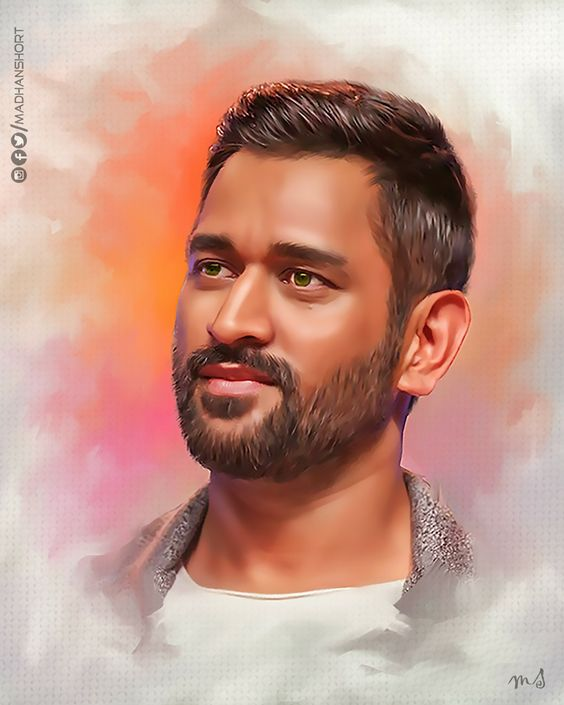
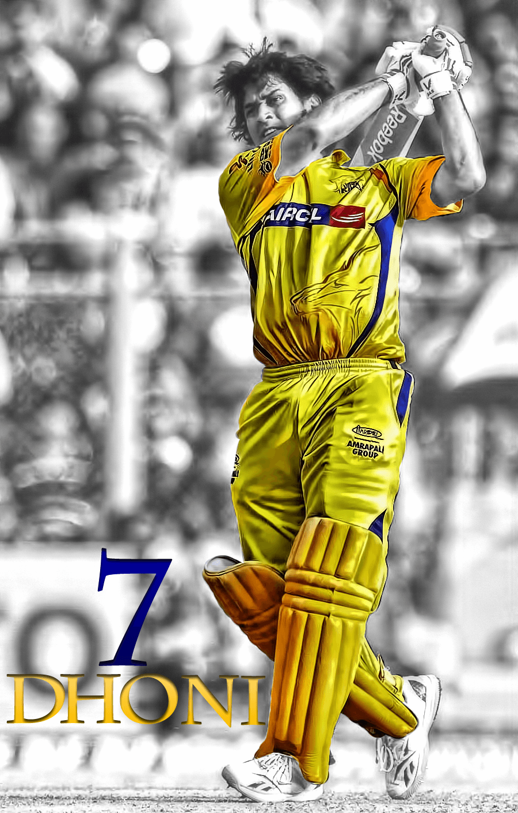
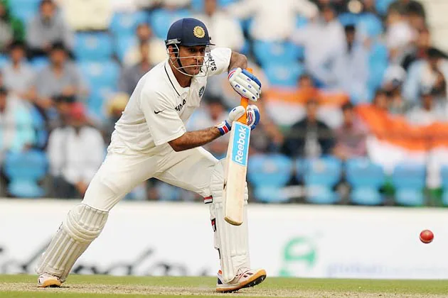

M.S.DHONI
( Biography )
M.S.Dhoni (Born 7 July 1981) is an Indian professional cricketer who was captain of the Indian national cricket team in limited-overs formats from 2007 to 2017 and in Test cricket from 2008 to 2014. He is a right-handed wicket-keeper batsman . He led the team to three ICC trophies including the 2007 ICC World Twenty20 , 2011 ICC Cricket World Cup and 2013 ICC Champions Trophy. Under his captaincy, India won the Asia Cup two times, in 2010 and 2016. India also won ICC Test Championship Mace two times in 2010 and 2011 under his leadership. He is considered as one of the greatest Captains and Wicket Keeper-Batsmen of all time. Throughout his 15 year long international career, Dhoni has won several awards and accolades.
 I n Indian domestic cricket he played for Bihar and Jharkhand Cricket team . He is the captain of Chennai Super Kings (CSK) in the Indian Premier League . He captained the side to championships in the 2010, 2011, 2018 and 2021 editions of IPL league. Also under his captaincy Chennai Super Kings (CSK) Won Champions League T20 two times, in 2010 and 2014 . He vacated the captaincy on 24 March 2022, being replaced by Ravindra Jadeja . He took back the captaincy on 30 April 2022.
 Dhoni made his ODI debut on 23 December 2004, against Bangladesh in Chittagong , and played his first Test a year later against Sri Lanka . He played his first T20I also a year later against South Africa . In 2007, he took over the ODI captaincy from Rahul Dravid . In 2008, he was selected as Test Captain. His captaincy record in this format was mixed, successfully leading India to a series win against New Zealand in 2008 and the Border-Gavaskar Trophy (home series in 2010 and 2013) against Australia while losing to Sri Lanka, Australia, England, and South Africa by big margins in away conditions.
He announced his retirement from Test format on 30 December 2014, and stepped down as captain of T20Is and ODIs in 2017. On 15 August 2020, Dhoni retired from all formats of international cricket. He continues to play in the IPL.
Early life and background
Early Career